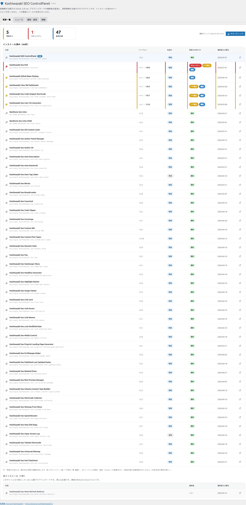
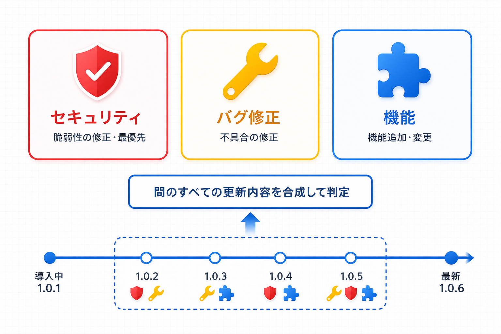

更新一覧と更新の種類
「更新一覧」タブは本プラグインの中心画面です。監視対象の状態が一目でわかる統計タイルと、更新の種類が色分けされた一覧テーブルの見方を解説します。
画面の構成

統計タイル
| タイル | 意味 |
|---|---|
| 更新あり | 新しいバージョンが公開されている項目の数 |
| セキュリティ | 更新のうち、セキュリティ修正を含む項目の数（赤で強調） |
| 監視対象 | マニフェストに含まれる監視対象の総数 |
タイルの右側には最終チェック日時と「今すぐチェック」ボタンが表示されます。「今すぐチェック」はマニフェストを強制再取得して照合をやり直します。
一覧テーブルの見方
| 列 | 内容 |
|---|---|
| 名前 | プラグイン/テーマ名と slug。アイコンはプラグイン（プラグ）とテーマ（ピン）で異なります。本プラグイン自身には「本体」バッジが付き、常に先頭に表示されます |
| バージョン | 更新がある場合は「 |
| 有効化 | 「有効」または「無効」（インストール済みで停止中） |
| 更新のお知らせ | 更新がある場合は種類チップ（下記 3 分類）。最新なら「最新」、マニフェストから情報を取得できない場合は「取得失敗」 |
| 最新版の公開日 | マニフェスト上の最新バージョンが公開された日付 |
| （右端のアイコン） | 該当リポジトリの GitHub ページを開くリンク |
行の並び順は「本体 → セキュリティ更新 → その他の更新 → 最新」です。更新がある行には左端に色付きのアクセントが付きます（セキュリティ=赤、その他の更新=黄）。
一覧は「インストール済み」と「未インストール」の 2 ブロックに分かれています。「未インストール」ブロックには、このサイトにまだ導入していない公開プラグイン/テーマが名前・最新版・公開日・GitHub リンクのみで表示されます（導入は任意。更新のお知らせの対象外です）。
更新の種類（3 分類）
更新がある項目の「更新のお知らせ」列には、その更新に含まれる内容の種類がチップで表示されます。1 つの更新に複数の種類が含まれる場合は、該当するチップがすべて表示されます。
| チップ | 色 | 意味 |
|---|---|---|
| セキュリティ | 赤 | 脆弱性の修正などセキュリティに関わる更新。最優先で適用を検討してください |
| バグ修正 | 黄 | 不具合の修正を含む更新 |
| 機能 | 青 | 機能追加・変更を含む更新 |
種類の判定は「いま導入しているバージョンから最新版までの間に公開されたすべてのバージョンの更新内容」をもとに行われます。たとえば 1.0.1 を使っていて最新が 1.0.6 の場合、1.0.2〜1.0.6 のどれか 1 つにでもセキュリティ修正が含まれていれば「セキュリティ」チップが表示されます。

本体の自己更新
本プラグイン自身に新しいバージョンが公開されると、WordPress 標準のプラグイン更新（「プラグイン」画面の更新通知や「ダッシュボード > 更新」）にそのまま表示され、ワンクリックで更新できます。更新パッケージの取得元は GitHub 系の配信ホストに限定されており、それ以外の URL からはダウンロードしない多重の安全対策が入っています。
本プラグインが自動で更新するのは本体自身のみです。監視対象の各プラグイン/テーマについては「検知・通知・GitHub への誘導」までを行い、自動更新はしません。各項目の更新は GitHub リンクから最新版を取得して適用してください。